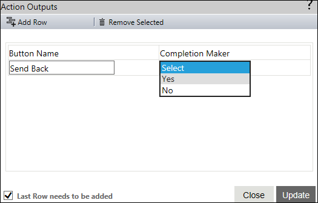

No
Choice - Action Outputs
Action Outputs Property Window
You can specify the possible outputs of the Choice activity in this property window. To open this window, click the button for the 'Action Outputs' property. It displays the Outputs in a grid, which also has a blank row where you can enter the parameters for a new action output.

The window has two tabs at the top to manage the rows of outputs in the grid.
- Add Row - You can click this tab to add the newly entered output and display a new row to the grid where you can add another output.
- Remove Selected - You can click this tab to remove the output selected in the grid.
The grid has the following parameters that you need to specify for the new output.
- Button Name - You can use this field to enter the action output.
- Completion Maker - You can use the drop down in this field to specify whether the corresponding output is the completion maker for the activity by selecting "Yes" from the drop down. Select "No" if you do not want the output to be a task completion maker.
There are two buttons and a check box at the bottom of the screen.
- Update - Click this button to save the newly added output(s)
- Close - Click this to close the property window without saving the newly added output(s)
- Last Row needs to be added - You need to check this check box to add the last row of action outputs that you have entered. If this is not checked, the last row is ignored.